LoRe - Læring og Refleksjon
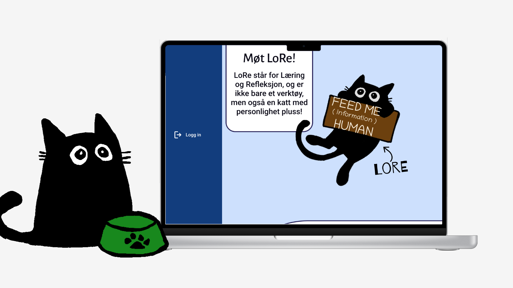
2024 | Emne: Tjenestedesign | Gruppe prosjekt | Rolle: UX-designer, tjenestedesigner
Vi fikk en oppgave fra NTNU om å lage en tjeneste hvor designstudenter skal kunne bli bedre til å reflektere rundt bærekraft. Ettersom de hadde sett at arbeidsmarkede ønsker nye arbeidere som kan ta gode bærekraftige valg og refleksjoner.
Vi var sammen 5 interaksjonsdesignere som skulle designe en løsning. Gjennom prosjektet hvor jeg var med å fokusere på idegenerering og brukertesting.
Insiktsfasen
Prosjektet startet med at vi fikk vite at studenter på Webutvikling skulle være «prøvekaniner» for prosjektet. Så vi startet med å intervju noen studenter i webutvikling.
Ut fra intervjuene startet vi først med å lage et Affinitetskart med svarn vi fikk og senere lagde vi en persona vi brukte videre gjennom prosjektet: Jonas.
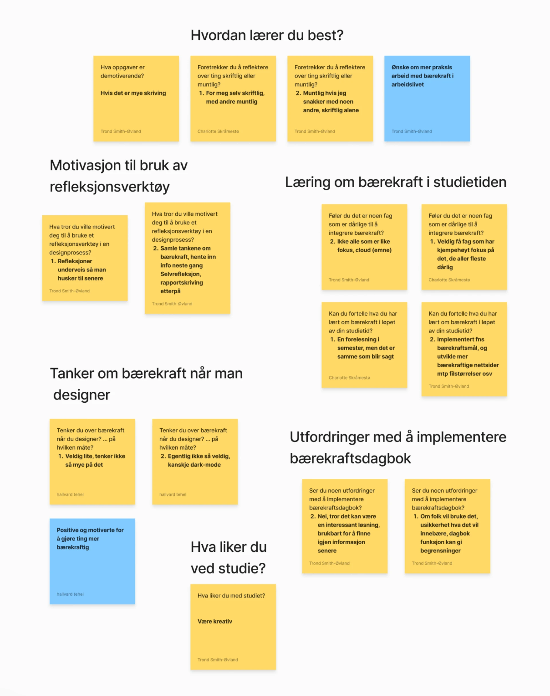
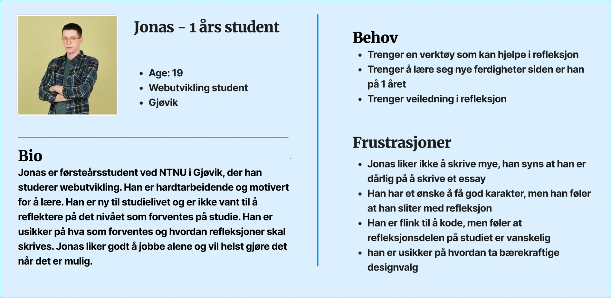
Hovedinnsikt intervjuer:
- Folk liker å reflektere alene, om ikke de skal reflektere i gruppe
- Det er demotiverende å måtte skrive mye
- Flere emner er dårlige på å lære om bærekraft
- Studenter er positive til å lære mer om bærekraft
Videre arbeid
Videre lagde vi også empatikart ut fra intervjuene vi hadde:
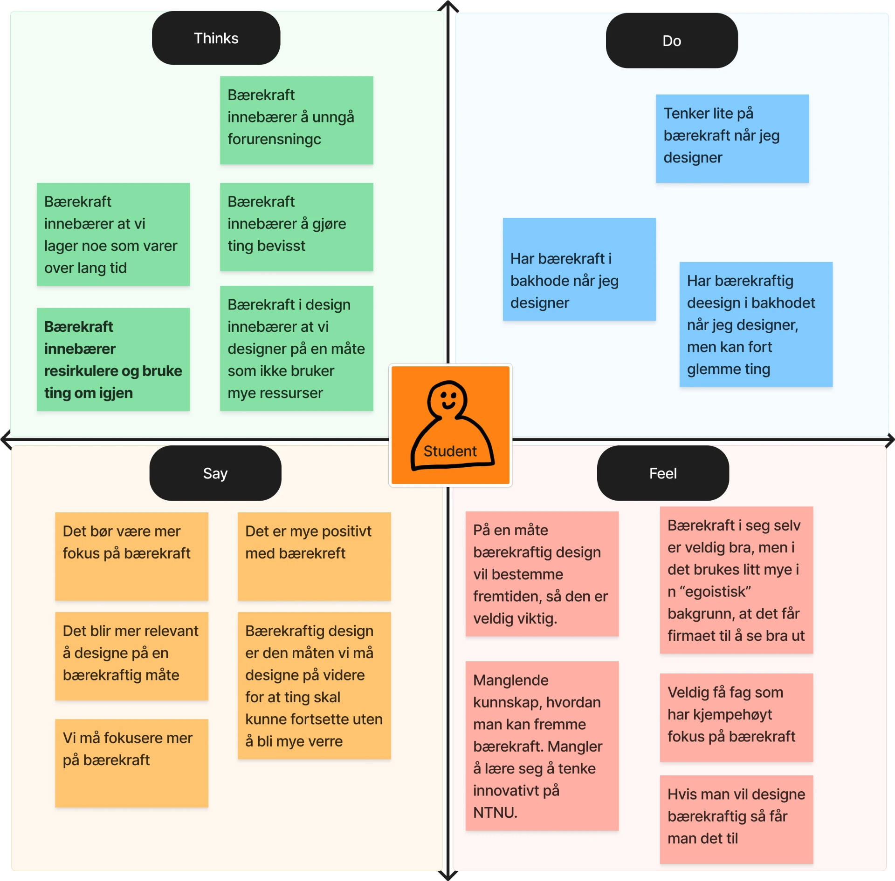
I tillegg utførte mange metoder for å utvikle nye ideer som Crazy 8, How might we, 5-3-5 og Flip the problem. Noe som kom mye opp var et ønske om å ha et belønningssystem i løsningen.
Konseptuering
Tidlig i prosjektet lagde vi lofi prototyper av hva vi tenkte løsningen kunne være. En av de første var et type forum, hvor du kunne skrive refleksjoner annonymt, og dele de annonymt.
Videre så vi også på hvordan tankekart kunne være med for å la studenter reflektere på flere måter, men det konseptet gikk vekk i site versjon
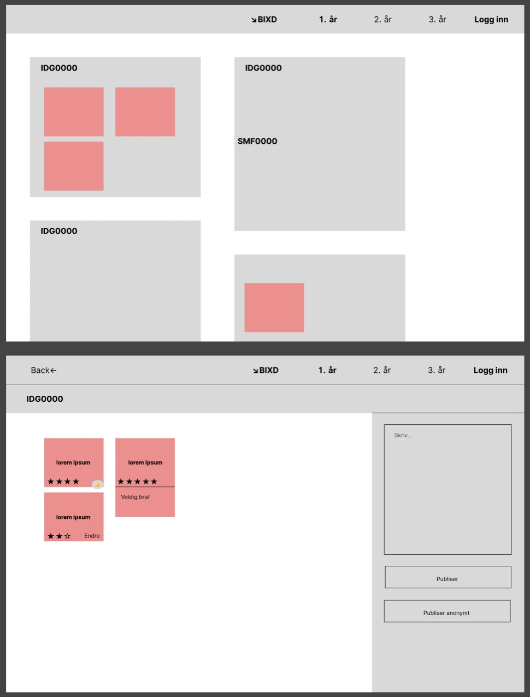
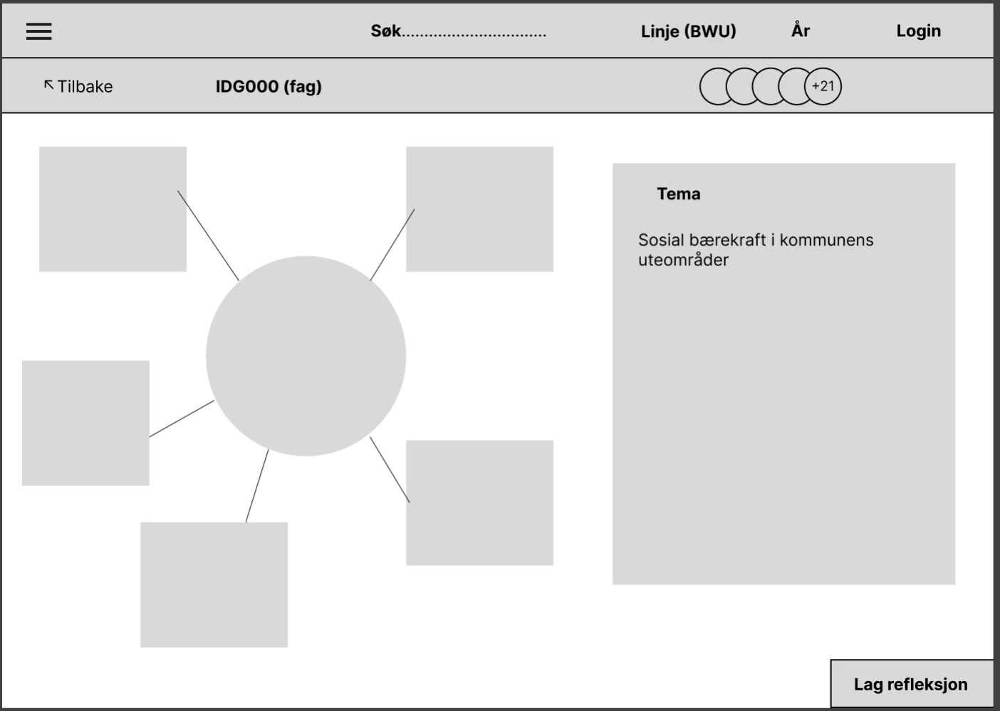
Til slutt fikk en i gruppen ideen om å lage en maskot, lignende Duolingo. Her kom koneptet LoRe
Med LoRe, kan du gjøre refleksjoner i "Arbeidstavla" eller dele tanker, konsepter og refleksjoner i "User stream".
Tanken med LoRe er at du mater den med å reflektere. Samtidig må refleksjonene dine være på et godt nok nivå for at LoRe skal spise maten.
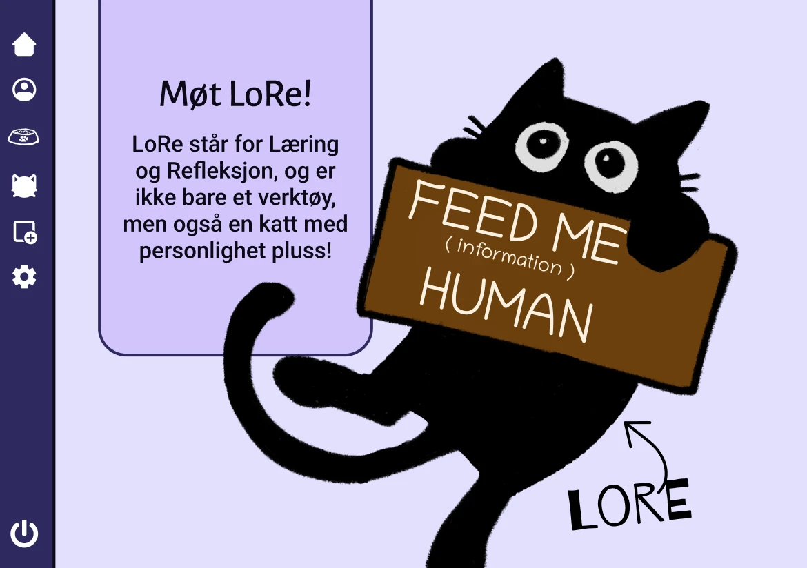
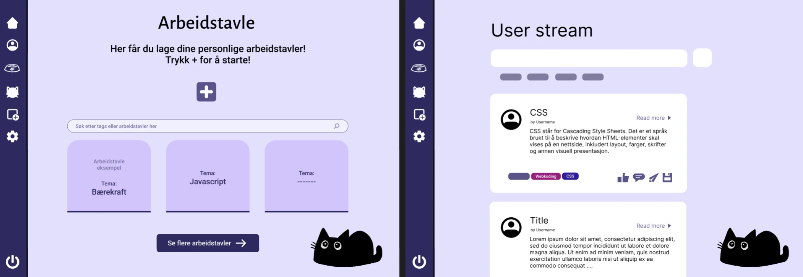
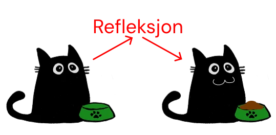
Vi fikk teste konseptet på noen webutviklere og fikk noen tilbakemeldinger på ting som burde fikses. Samtidig var mange av de positive til katten.
Utvikling
I utviklingen gjorde vi brukergrensesnittet enklere å forstå, med å bruke tekst og ikke bare ikoner. Mye av utseende ble kopiert fra blackboard, siden alle studenter på NTNU er kjent med hvordan det ser ut.
Vi endret litt retning i siste prototype og byttet ut arbeidstavle med refleksjon. Men i tillegg fikk vi lagt til en belønningsside hvor brukere kan tjene medaljer eller mer.
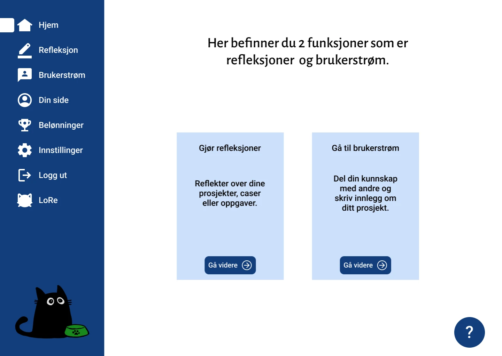
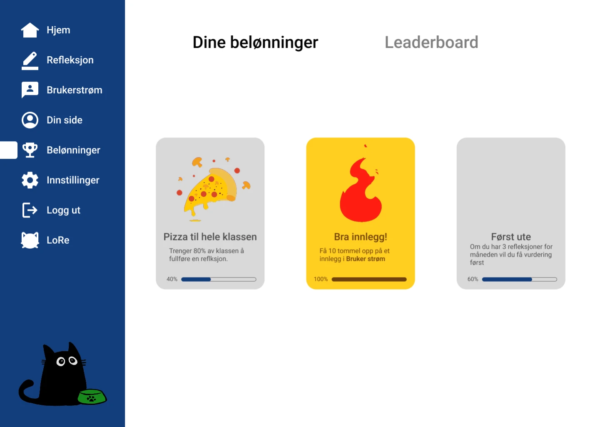
Du kan prøve hele prototypen i figma med knappen under:
Til Figma prototypeRefleksjon
Totalt sett var dette et veldig gøy prosjekt, det er mye vi fikk lært i faget som jeg ikke fikk lagt opp her. Det er også mye mer med prosjektet vi tenkte å utvikle og jobbe videre med, som at LoRe ville vokse jo mer du fikk matet han og legge til flere funksjoner for at du kan reflektere på flere måter rundt bærekraft.
Selve konseptet LoRe var ikke min egen ide, men jeg var med på å utvikle den og kom med flere ideer til hvordan løsningen kunne fungere, i tillegg til å bidra aktivt i gruppen for å samle inn god data og lage gode ideer.
Å jobbe videre med prosjekter som dette er noe jeg kunne tenkt meg.
Tilbake til alle prosjekter